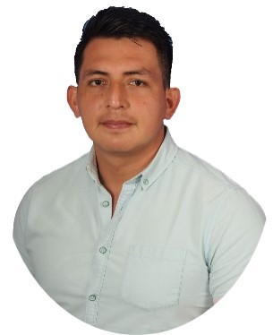

Who I Am
I specialize in applying geospatial technologies and AI to tackle complex challenges. My expertise spans GIS, remote sensing, and machine learning for environmental monitoring, infrastructure analysis, and decision support systems.
Languages
 English
English
 German
German
 Spanish
Spanish
Education
M.Sc.
Photogrammetry & Geoinformatics, HFT-Stuttgart (2019–2021)
B.Sc.
Geological Engineering, ESPOL Polytechnic University (2013–2018)